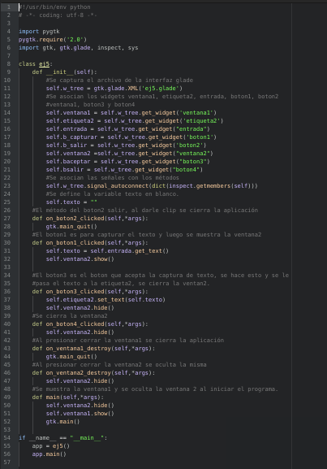

Desarrollo de aplicaciones gráficas con python+gtk+glade. Parte 4
Posted on mié 17 junio 2009 in Tutorial Python • 1 min read
El siguiente ejemplo explicará como manejar 2 ventanas en una aplicación.
La primera venta muestra 2 etiquetas una con un texto y la otra en blanco, luego una entrada de datos solicitando el nombre, 2 botones uno de capturar texto y otra de salir. Al darle al botón de capturar texto se abre otra ventana preguntando si está seguro de lo que desea hacer, si se le da aceptar presenta el texto en la etiqueta.
La siguiente figura muestra la interfaz desarrollado con glade.

El código del programa es el siguiente:

Al ejecutar el programa se muestra la siguiente figura:

Se escribe el nombre y se presiona capturar texto:

Al presiona capturar texto y se abre una ventana con la pregunta si se desea aceptar o salir de la aplicación.

Para finalizar se muestra la captura de texto en la etiqueta.

El código de la aplicación lo pueden descargar de github en el siguiente enlace.
===
¡Haz tu donativo! Si te gustó el artículo puedes realizar un donativo con Bitcoin (BTC) usando la billetera digital de tu preferencia a la siguiente dirección: 17MtNybhdkA9GV3UNS6BTwPcuhjXoPrSzV
O Escaneando el código QR desde billetera: